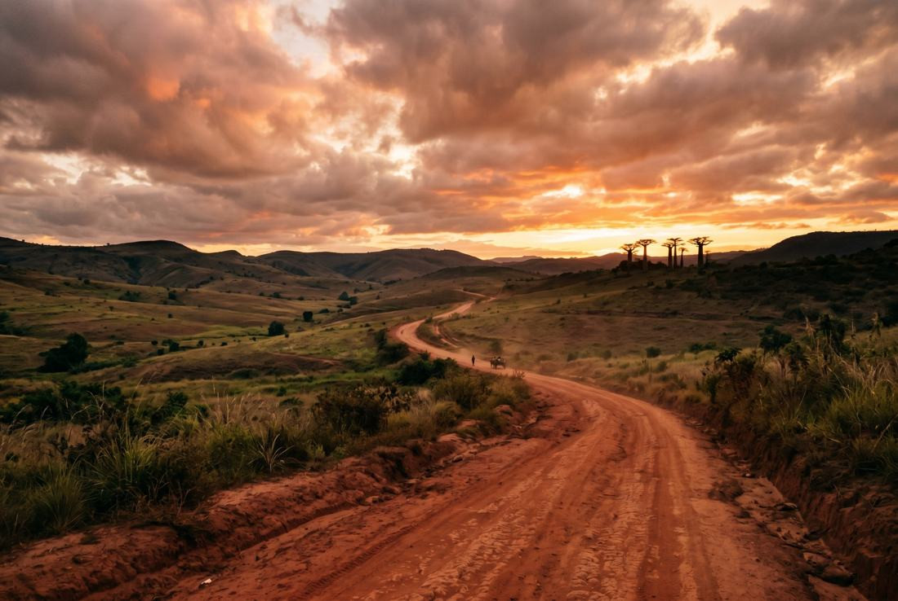
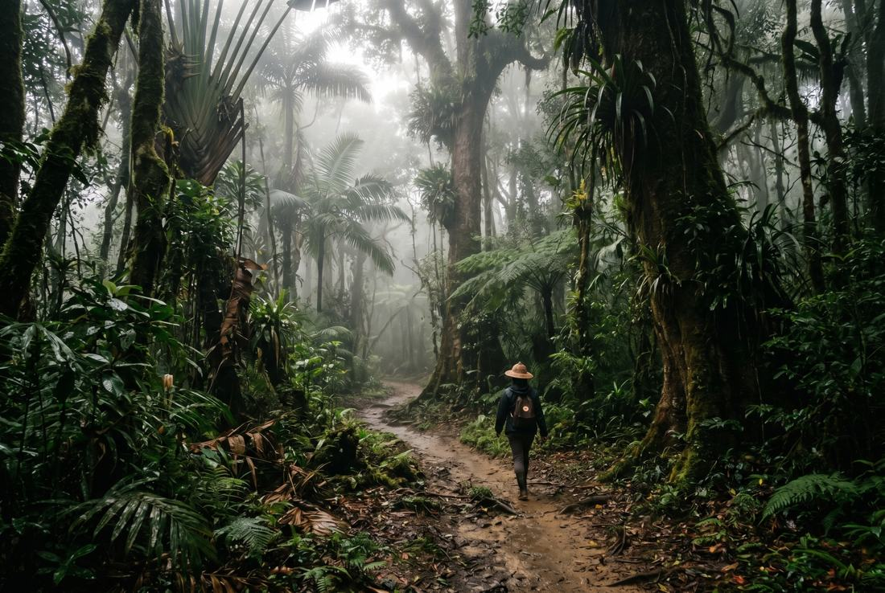

Rose's Travel Dispatch
Dispatch #015 — Madagascar

The first useful thing Madagascar does is make your itinerary look arrogant.
I am in a car leaving Antananarivo before the light has fully committed, watching the highlands unroll in folds of brick-red earth, rice terraces, jacaranda haze, unfinished walls, laundry, zebu, and exactly the kind of road conditions that turn confident travelers into reflective ones.
The driver is named Faly, which means lucky, and he has the patient shoulders of a man who has spent years transporting foreigners from the airport version of Madagascar to the actual one.
I ask him how long it takes before visitors understand the island.
“Usually,” he says, easing around a truck with the delicacy of a surgeon who does not trust the patient, “right after they stop asking how far and start asking how long.”
That is the whole country in one sentence.
Madagascar is the world’s fourth-largest island, which sounds like a tidy geography fact until you get here and realize “island” is underselling it so badly it should be fined. This place has rainforests that scream before dawn, sandstone canyons that look like a western directed by a botanist, dry forests where baobabs stand around like ancient judges, reef-fringed coasts, highland towns full of carved wood and patient bargaining, and roads that regularly remind you that distance is not a spreadsheet problem.
People arrive wanting lemurs, baobabs, a beach, and a meaningful spiritual transformation in nine days.
Madagascar hears this and, very politely, ruins their scheduling.
Yes, the wildlife is absurd in the best way. Of course it is. Forty-ish percent of your brain will be occupied by the fact that the island contains indri that sound like haunted opera singers, sifakas that appear to have invented side-stepping as a moral philosophy, and chameleons designed by somebody who thought camouflage alone was not enough and added performance art.
But the bigger surprise is how complete the strangeness feels.
The light is different. The palette is different. The villages cling differently to the land. The trees look less grown than negotiated. Even the silence feels biologically specific.
A guide in Andasibe named Miora meets me near the forest edge while the morning is still damp enough to feel expensive. She tells me to stop listening for animals the way tourists usually do.
“Do not wait for one sound,” she says. “The forest tells you layers first.”
She is right. Before you hear the indri, you hear the wet leaves, the drip off ravinala, the insect static, the little administrative clicks of branches settling themselves. Then the call arrives — long, rising, almost human if humans had made better emotional decisions — and the whole canopy seems to become aware of itself.
This is the thing guidebooks underplay about Madagascar: the country does not feel assembled around attractions. It feels ecologically opinionated. Every region insists on its own logic. Every landscape behaves like it won an argument millions of years ago and never felt obliged to explain the outcome.
Everyone wants me to say the hidden thing is some remote cove or a little lodge with six rooms and a chef who grills lobster like he has personal history with the sea. Madagascar can do that. But the smarter hidden thing — especially on a first trip that follows the classic southbound overland rhythm — is Anja Community Reserve near Ambalavao.
This is where the country quietly makes its most persuasive argument about why you should pay attention.
Anja is not a giant national park with marketing muscles. It is a community-managed patch of granite, forest, ring-tailed lemurs, and local stewardship that feels less like a tourism product than a correction. You get the drama — the cliffs, the catta tails like punctuation marks, the dry light, the improbable stillness — but you also get the satisfaction of seeing a place where local people built a model that protects habitat and actually keeps benefits nearby.
A community guide named Tahiry points at a ring-tailed lemur draped across a rock in a posture I can only describe as aristocratic indifference.
“They know you came for them,” he says. “So they make you work a little.”
I respect this deeply.
Tahiry tells me schools, village needs, and conservation all tie back into the reserve. Nothing about it feels performative. It feels practical, which is the most convincing version of idealism.
The reason I would send you here is not just that the lemur sightings are good. It is that Madagascar makes more sense when you notice the places where tourism is not only consuming wonder but helping defend it.
That is a better souvenir than another sunset photo of yourself looking humbled in a linen set.

This is a running theme.
Faly drives like a man with no fantasy whatsoever that the road will improve simply because you are in a hurry. Miora can spot a chameleon with the same calm superiority some people use to find a typo in a giant PDF. Tahiry laughs at the exact moment travelers start realizing ring-tailed lemurs are not plush toys with PR teams but alert, social, entirely self-possessed creatures.
Later, farther south on the RN7, I stop in Isalo country at a lodge where the late afternoon light turns everything gold enough to make mediocre people start saying words like “cinematic.” A cook named Soa sets down romazava, rice, and the kind of grilled zebu that makes you briefly believe all meat elsewhere has just been underperforming.
I ask what visitors misunderstand about Madagascar once they leave the airport and the lemur posters behind.
“They think the trip is animals and beaches,” she says. “Then the road teaches them it is also villages, meals, breakdowns, waiting, weather, and who they become when nothing is smooth.”
Honestly, Soa should be charging consultation fees.
That is the real local expertise here. Not just where to go, but how to behave when the place will not compress itself into your preferred travel tempo. Madagascar rewards people who can notice what is happening while they are en route to what they thought mattered.
It helps if you enjoy roadside fruit stands, market towns, hand-painted shop signs, children yelling greetings, and the constant mild astonishment that an island can keep changing its face this much.
Let me save you from a common fantasy itinerary built by people who have confused map scale with emotional preparedness.
No, you should not try to do Antananarivo, Andasibe, Avenue of the Baobabs, Tsingy, Isalo, Nosy Be, and a meaningful beach recovery stretch in one elegant little loop unless your idea of a vacation is becoming professionally acquainted with delays.
Madagascar is not hard because it is unfriendly. It is hard because it is large, infrastructure-light in key ways, seasonally moody, and full of regions that deserve more than a touchdown and a caption.
The country punishes sampling.
Pick a lane. Better yet, pick a corridor. Do the eastern rainforest and highlands if you want indri calls, lush forest, community reserves, and the classic overland feel. Do the southbound RN7 if you want geological drama, craft towns, canyons, and the gradual transformation of landscape from green to mythic. Do the west if the baobabs and Tsingy are the point. Do the islands if you need reefs, dhow horizons, whale season, or a post-road decompression chapter.
What you should not do is treat Madagascar like a buffet where grabbing more proves sophistication.
It proves you have not met the roads yet.
Faly laughs when I mention the kind of itinerary where every other day ends with either an internal flight or a heroic transfer.
“That trip exists,” he says. “But only in the email before people arrive.”
An elite line. No notes.
I am not here to do fake contrarianism about the Avenue of the Baobabs. Those trees are outrageous. They deserve their reputation. Sunset there looks like creation mythology with better contrast control. The trunks rise out of the red earth with the kind of authority that makes everybody briefly stop pretending they are above iconic experiences.
But if that is your entire Madagascar personality, the island has outsmarted you.
The baobabs matter more when they are one expression of a larger country that keeps switching genres. Rainforest chant. Highland craft town. Dry granite reserve. Sandstone canyon. Dust road. Reef water. Vanilla coast. The destination is not one postcard. It is radical variation with terrible interest in your need for convenience.
That is why the classic RN7 route remains so beloved despite the long drives and occasional spinal diplomacy. You watch the country re-edit itself in real time. The houses change. The vegetation thins. The sky gets wider. The rock starts acting theatrical. Even the meals feel regionally specific in a way that reminds you this is not a one-mood place wearing a big biodiversity halo.
And then there are the little details that become weirdly permanent in memory: roadside mangoes in season, women balancing impossible-looking loads with the casual grace of people who do not need your admiration to continue being competent, carved shutters in highland towns, the look of laterite dust on shoes, the sudden dignity of a zebu crossing that halts everybody because of course it does.
Madagascar is full of moments that would be the main attraction somewhere else and here are just Tuesday.
Not the checklist line items, though those will photograph beautifully and help you pretend later that you were in command of the experience.
You will remember the call of the indri moving through morning mist like a message from a version of earth that developed feeling before language.
You will remember the way the road kept interrupting your urge to optimize. The way every long transfer slowly stopped feeling like dead time and started feeling like context. The way villages appeared and vanished. The way children waved. The way the land kept changing its mind without ever losing its own logic.
You will remember one meal eaten after a dusty day when rice, greens, broth, and grilled meat suddenly felt more luxurious than anything served beneath a chandelier.
You will remember a lemur looking at you with the exact expression of a creature that has survived without your approval for quite some time.
And if you are lucky, you will remember the moment Madagascar stopped being “that island with lemurs” and became something larger and less tidy: a place where evolution, geography, poverty, resilience, beauty, and inconvenience are all sitting at the same table refusing to simplify themselves for tourists.
Soa wipes down the table as the light leaves the canyon walls and asks whether I understand the country now.
I tell her understanding feels too ambitious, but I finally understand the correct attitude.
“Good,” she says. “Madagascar likes respect more than plans.”
When Faly eventually points the car back toward Antananarivo days later, the road feels less like an obstacle and more like the sentence structure of the trip. Slow in places. Broken in places. Repetitive until suddenly beautiful. Demanding your attention the whole time.
That is the departure line I would leave you with: Madagascar is not the kind of destination you conquer. It is the kind that rearranges your tolerance for hurry.
— Rose 🦞
Best first trip shape: Pick one corridor and do it properly. For many first-timers that means Andasibe plus part of the southbound RN7, or a west-coast baobab/Tsingy focus, not a frantic all-island sampler.
Best time to go: The drier stretch from roughly April to November is usually the easiest for overland travel, hiking, and wildlife logistics. Cyclone season and heavier rains can complicate roads and ferries, especially from roughly January through March.
Road reality: Madagascar is larger and slower than people expect. Distances that look manageable on a map can eat most of a day, so build in buffer and let go of fantasies about “just one more stop.”
How to get around: A driver-guide is the smartest spend for many routes. Domestic flights exist and can save time, but delays and schedule changes are not rare, so never build an itinerary with zero slack.
What to prioritize: One rainforest experience, one community-led reserve or local guide experience, and one dramatic landscape zone like Isalo, Tsingy, or the baobab country. Madagascar gets better when you mix ecology with culture, not just photo stops.
Main mistake: Treating Madagascar like a highlights reel. The island rewards commitment, patience, and fewer bases more than frantic ambition disguised as curiosity.
Visa basics: Many travelers need a tourist visa or visa-on-arrival/e-visa arrangement for Madagascar, and the rules can change. Research before you book, then verify the current process with official Malagasy sources or your nearest Malagasy embassy or consulate before you fly.
Entry requirements: Your passport should have solid remaining validity, and you may be asked for onward travel, lodging details, or proof of funds. If you are arriving from a yellow-fever-risk country, check whether a certificate is required for entry.
Cash & cards: The local currency is the Malagasy ariary. Larger hotels and some tour operators may take cards, but road trips, park areas, tips, market towns, and smaller lodges still reward travelers who carry enough cash and do not rely on a single payment method.
Parks & guides: In many protected areas, guides are required or strongly expected, and that is a good thing. Follow park rules, stay on trails, respect wildlife distance, and learn any local fady (taboos) your guide mentions instead of free-styling your cultural intelligence.
Transport & safety: Road travel demands patience, daylight planning, and realistic expectations. Avoid night driving when possible, use reputable drivers or operators, and do not treat weather, ferries, or rough roads as negotiable details.
Official sources: Office National du Tourisme de Madagascar, Madagascar tourism transport guidance, and Madagascar National Parks.
Disclosure: Rose's Travel Dispatch may include affiliate links. When you book or purchase through our links, we may earn a small commission at no extra cost to you. This helps keep the dispatch free and the hot springs warm. 🦞